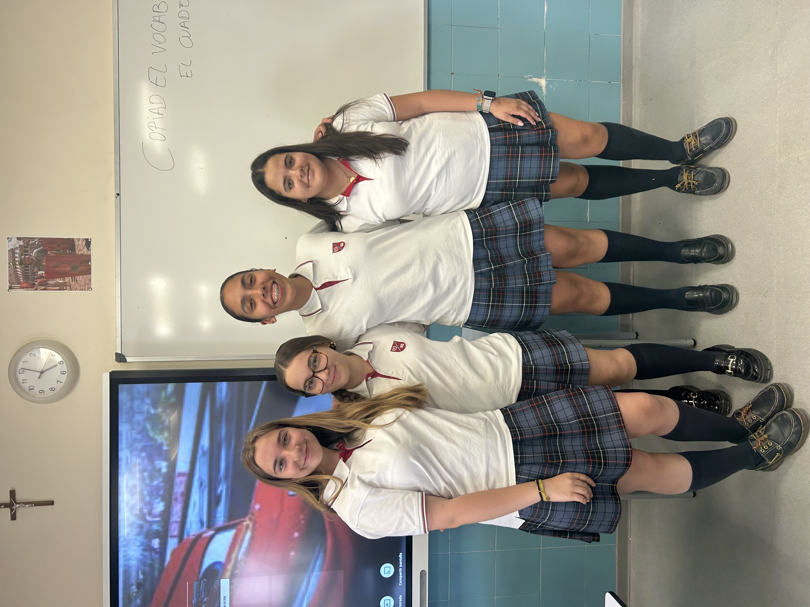
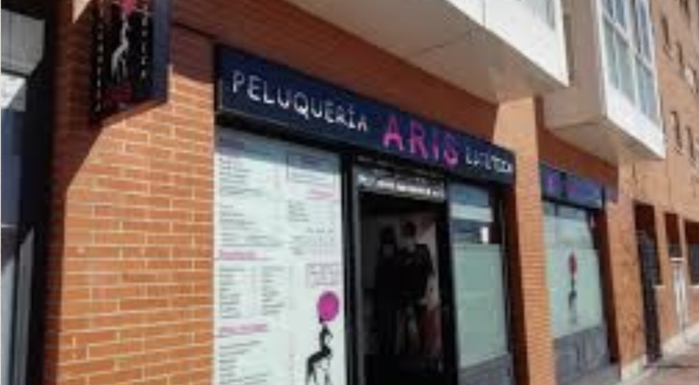

Cáritas

Entrevistamos a Don Javier para conocer el trabajo que realiza Cáritas acompañando y ayudando a personas en situación de vulnerabilidad.
"No se trata de mirar desde arriba, se trata de mirar de igual a igual."
Leer entrevista completaPequeñas acciones, grandes cambios. Una revista creada por jóvenes para promover la sostenibilidad, el comercio local, la educación financiera y el impacto social.

Creemos que las pequeñas decisiones del día a día pueden generar grandes cambios. Por eso investigamos iniciativas relacionadas con el consumo responsable, el reciclaje y la sostenibilidad.
"Consume con conciencia para que el mundo no pierda su esencia."

Conocimos de cerca la historia de ARIS, un negocio local comprometido con la atención personalizada, la sostenibilidad y el emprendimiento.
"Nuestra peluquería aporta confianza."
Leer entrevista completa
Entrevistamos a Don Javier para conocer el trabajo que realiza Cáritas acompañando y ayudando a personas en situación de vulnerabilidad.
"No se trata de mirar desde arriba, se trata de mirar de igual a igual."
Leer entrevista completa💰 Aprende a ahorrar.
📊 Organiza tus gastos.
🏦 Entiende conceptos financieros.
🌱 Toma decisiones responsables.
Anella Testa
Natalia González
Ariadna Yuste
Sonsoles Bermejo
4º ESO · Proyecto Jóvenes con Futuro